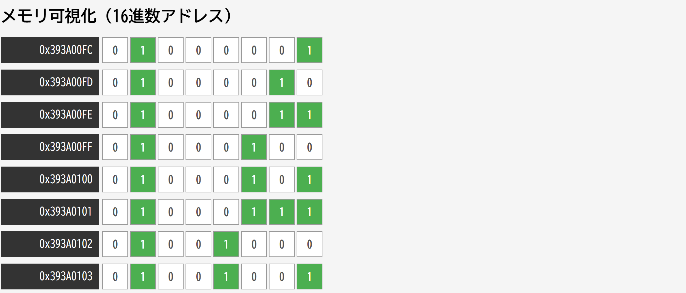

目次
0章 メモリの構造

メモリの写真
1章
1.
ホームディレクトリ下のディレクトリPROGRAM にソースプログラム（ファイル名test1.c）を作成する。
2.
test1.cのコピーをtest_orig.cという名前でディレクトリoldに作成する。
3. test1.cを編集する。
4.
test1.cとtest_orig.cの違いをdiffコマンドを利用して表示。
cd ~/PROGRAMvi test1.cmkdir oldcp test1.c old/test_orig.cvi test1.cdiff test1.c old/test_orig.c2章
int型,
unsigned
int型などの各整数型変数を宣言しそれぞれが表すことができる最大値を初期値として代入するとともに，変数の値を画面表示するプログラムを作成してください
#include <stdio.h> int main( void ) { char c = 127 ; unsigned char uc = 255 ; short int si = 32767 ; unsigned short int usi = 65535 ; int i = 2147483647 ; unsigned int ui = 4294967295 ; long int li = 9223372036854775807 ; unsigned long int uli = 18446744073709551615 ; ( "%d" , c); ( "%u" , uc); ( "%d" , si); ( "%u" , usi); ( "%d" , i); ( "%u" , ui); ( "%ld" , li); ( "%lu" , uli); return 0 ; } 6を1から7で割った結果を画面表示するプログラムの作成してください
#include <stdio.h> int main( void ) { double x; for ( x = 1.0 ; x <= 7.0 ; x++) { ( "6.0/%f=%f" , x, 6.0 / x); } return 0 ; } 以下のプログラムをコンパイルして現れる結果を示すとともに，128にならなかった原因を答えよ
#include <stdio.h> int main( void ) { char c = 127 ; ( "c = %d" , c); = c + 1 ; ( "c = %d" , c); return 0 ; } 文字Aの値，および，8進数の100と10進数の100と16進数の100を使って，以下のように出力するプログラムを作成せよ
#include <stdio.h> int main( void ) { ( "文字Aの値 = %d" , 'A' ); ( "8進数の100 = %d" , 0100 ); ( "10進数の100 = %d" , 100 ); ( "16進数の100 = %d" , 0x100 ); return 0 ; } 3章
文字配列strを文字列This
is a
string!で初期化した後,以下のような結果となるようなプログラムを作成せよ。
T
!
#include <stdio.h> int main( void ) { char str[] = "This is a string!" ; ( "%c" , str[ 0 ]); ( "%c" , str[ 16 ]); ( "%c" , str[ 4 ]); //or 7, 9, 17 return 0 ; } double型配列
a (要素数3)に1 .23 , 2.34 , 3 45
の値を初期設定し,それらの合計値を画面表示するプログラムを作成せよ。
#include <stdio.h> int main( void ) { double A[ 3 ] = { 1.23 , 2.34 , 3.45 }; ( "%f" , A[ 0 ] + A[ 1 ] + A[ 2 ]); return 0 ; } 以下の
6
つの数値を保存するために必要な変数を宣言して、各数値を初期値として設定しなさい。また、
printf
を利用して各変数の値を画面に表示しなさい。ただし、変数は指示された値を保存するために最小限のメモリ領域を利用するように型を選択しなさい。(例えば、12という値を保存するための変数はint
型ではなく char 型を利用する)127 、 200 、 300 、 123456 、 1234.5
、12345678901234
#include <stdio.h> int main( void ) { char c1 = 127 ; unsigned char c2 = 200 ; short int si1 = 300 ; int i1 = 123456 ; float f1 = 1234.5 ; long int li1 = 12345678901234 ; double d1 = 12345678901234.0 ; ( "c1 = %d" , c1); ( "c2 = %u" , c2); ( "si1 = %d" , si1); ( "i1 = %d" , i1); ( "f1 = %f" , f1); ( "li1 = %ld" , li1); ( "d1 = %f" , d1); return 0 ; } 配列名が
a の char 型の配列を1 , 2 , 4 , 8 , 16 , 32 , 64 , 128
で初期化するとともに配列の全ての要素を要素番号の小さい順に表示し、すべての要素の総和も表示するプログラムを作りなさい。
<注意>char
型の値の範囲を超える 128
や総和の値は、正しく画面に表示されないが,そのままでよい。ただし,なぜそのような結果になるのかは考える。
#include <stdio.h> int main( void ) { char a[] = { 1 , 2 , 4 , 8 , 16 , 32 , 64 , 128 }; ( "%d" , a[ 0 ]); ( "%d" , a[ 1 ]); ( "%d" , a[ 2 ]); ( "%d" , a[ 3 ]); ( "%d" , a[ 4 ]); ( "%d" , a[ 5 ]); ( "%d" , a[ 6 ]); ( "%d" , a[ 7 ]); ( "%d" , a[ 0 ] + a[ 1 ] + a[ 2 ] + a[ 3 ] + a[ 4 ] + a[ 5 ] + a[ 6 ] + a[ 7 ]); return 0 ; } 一つ前のコードでの配列の型をunsigned
char型に変えて実行した結果を示しなさい。
#include <stdio.h> int main( void ) { unsigned char a[] = { 1 , 2 , 4 , 8 , 16 , 32 , 64 , 128 }; ( "%u" , a[ 0 ]); ( "%u" , a[ 1 ]); ( "%u" , a[ 2 ]); ( "%u" , a[ 3 ]); ( "%u" , a[ 4 ]); ( "%u" , a[ 5 ]); ( "%u" , a[ 6 ]); ( "%u" , a[ 7 ]); ( "%u" , a[ 0 ] + a[ 1 ] + a[ 2 ] + a[ 3 ] + a[ 4 ] + a[ 5 ] + a[ 6 ] + a[ 7 ]); return 0 ; } 1つ前のコードの配列の初期値を
8進数の表現に変えたプログラムを作成するとともに、実行結果が1つ前と一致することを確認しなさい。
#include <stdio.h> int main( void ) { unsigned char a[] = { 01 , 02 , 04 , 010 , 020 , 040 , 0100 , 0200 }; ( "%u" , a[ 0 ]); ( "%u" , a[ 1 ]); ( "%u" , a[ 2 ]); ( "%u" , a[ 3 ]); ( "%u" , a[ 4 ]); ( "%u" , a[ 5 ]); ( "%u" , a[ 6 ]); ( "%u" , a[ 7 ]); ( "%u" , a[ 0 ] + a[ 1 ] + a[ 2 ] + a[ 3 ] + a[ 4 ] + a[ 5 ] + a[ 6 ] + a[ 7 ]); return 0 ; } 2つ前のコードの配列の初期値を16進数の表現に変えたプログラムを作成するとともに、実行結果が2つ前と一致することを確認しなさい。
#include <stdio.h> int main( void ) { unsigned char a[] = { 0x1 , 0x2 , 0x4 , 0x8 , 0x10 , 0x20 , 0x40 , 0x80 }; ( "%u" , a[ 0 ]); ( "%u" , a[ 1 ]); ( "%u" , a[ 2 ]); ( "%u" , a[ 3 ]); ( "%u" , a[ 4 ]); ( "%u" , a[ 5 ]); ( "%u" , a[ 6 ]); ( "%u" , a[ 7 ]); ( "%u" , a[ 0 ] + a[ 1 ] + a[ 2 ] + a[ 3 ] + a[ 4 ] + a[ 5 ] + a[ 6 ] + a[ 7 ]); return 0 ; } 下記形式にて、文字配列(配列名.
name
)を宣言し、自分の名前の後ろに?(クエスチョンマーク)をつけた字列で初期化し,文字配列の文字列を画面に表示るプログラムと実行結果を示しなさい。
データ型 配列名[] = {定数, 定数, ・・・, 定数}#include <stdio.h> int main( void ) { char name[] = { 's' , 'u' , 'g' , 'a' , '?' , '\0' }; ( "name = %s" , name); return 0 ; } 一つ前のコードにて作成した文字配列の全ての文字(先頭の文字からヌル文字まで)の文字と文字コードを1文字1行すっ画面に表示するプログラムを作成し、プログラムと実行結果を示しなさい。
#include <stdio.h> int main( void ) { char name[] = { 's' , 'u' , 'g' , 'a' , '?' , '\0' }; ( "%c = %d" , name[ 0 ], name[ 0 ]); ( "%c = %d" , name[ 1 ], name[ 1 ]); ( "%c = %d" , name[ 2 ], name[ 2 ]); ( "%c = %d" , name[ 3 ], name[ 3 ]); ( "%c = %d" , name[ 4 ], name[ 4 ]); ( "%c = %d" , name[ 5 ], name[ 5 ]); return 0 ; } 下記形式にて、自分の名前を初期値として与えるようにせよ。ただし、「姓」と「名」の間にはタブ文字をエスケープシーケンスで加えなさい。初期値として与えた文字列を画面に表示するプログラムと実行結果を示しなさい。
char name[] = "自分の名前";#include <stdio.h> int main( void ) { char name2[] = "Suga \t Mikio" ; ( "name = %s" , name2); return 0 ; } 一つ前のコードにて作成したプログラムに「姓と名の間にあるタブ文字を改行文字に上書きする代入文」と,「上記文字列の内容を表示する
printf ()文」の 2 行だけを追加することで、下記例のように画面表示の 2
行目に「姓」、3
行目に「名」が表示されるようにしたプログラムを示しなさい。
#include <stdio.h> int main( void ) { char name2[] = "Suga \t Mikio" ; ( "name = %s" , name2); [ 4 ] = '\n' ; ( "%s " , name2); return 0 ; } ２つ前のコードにて作成したプログラムに#include
<string.h> と「strcpyを利用した文」と,「文字列の内容を表示する
printf()文」の 3 行だけを追加することで、画面表示の 2 行目に「姓」、 3
行目に「名」が表示されるようにしたプログラムを示しなさい。
#include <stdio.h> #include <string.h> int main( void ) { char name2[] = "Suga \t Mikio" ; ( "name = %s" , name2); ( name2, "Suga \n Mikio" ); ( "%s \n " , name2); return 0 ; } 4章
a
= 0, b = 3, c = 2とするとき、a = b = c;実行後の変数a, b,
cの値を結合規則をもとに説明しなさい。
#include <stdio.h> int main( void ) { int a = 0 , b = 3 , c = 2 ; ( "a = %d, b = %d, c = %dです。 \n " , a, b, c); = b = c; ( "a = b = c \n " ); ( "a = %d, b = %d, c = %dです。 \n " , a, b, c); return } a
= 1 , b = 0 とするとき、以下①~③実行後のa変数 a, b
の値を示しなさいもし文法間違いの文があれはその番号を示しなさい
((a = b) = 2 + 1 );
a = ( b = 2 ) + 1;
a = b = 2 + 1;
a = 1, b = 0とするとき、以下①〜③実行後の変数a, bの値を示しなさい．もし文法間違いの例 文があればその番号を示しなさい．
1. ((a = b) = 2 + 1); → 文法間違い
a = bが最初に実行された後に実行される 0 = 2 + 1;という式は，右辺の値を左辺の0という定数に代入できず，文法エラー
2. a = (b = 2) + 1; → a = 3, b = 2
括弧内の代入式が最初に実行された後，括弧内の値２に１を加えた値をaに代入する．
3. a = b = 2 + 1; → a = 3, b = 3
２＋１を計算した結果をｂに，次にaに代入する ．
iの初期値が
0 と 1 のときで j の値が変わる理由を答えなさい
#include <stdio.h> int main( void ) { int i = 0 , j = 0 ; if ( i && ( j = j + 1 )) { ; } ( "%d,%d" , i, j); return 0 ; } /* iの初期値が０のときは，if文の条件判定文の左側が０のため &&の右側の式が実行されず，jの値は変わらないが， iの初期値が１のときは，if文の条件判定文の左側が１のため &&の右側の式が実行され，jの値は１増える． */ 次のコメントの行を実行したあとのbの値と画面出力される値を示しなさい。
#include <stdio.h> int main( void ) { int a, b; char c; double e; = b = 2 ; += 2 ; /*bは2 + 2で4*/ = 95 ; ++; /*bは4+1で5 */ += c; /*bは5 + 95で100 */ ( "%d" , b++); /*bの値100を表示後にbに１加算*/ ( "%d" , b); /* 101を表示*/ = b; /* eは101をdouble型に型変換*/ ( "%f" , e); /* 101.0000 を表示*/ return 0 ; } double型の変数
dl
に任意の初期値を設定しても、その四捨五入した値を画面表示するプログラムを作成せよ。
#include <stdio.h> int main( void ) { double d1 = 3.7 ; int i1; = d1 + 0.5 ; ( "d1=%fの四捨五入した結果は%dです。" , d1, i1); return 0 ; } 1から30まで10ずつ改行して表示するプログラムを作成せよ。
#include <stdio.h> int main( void ) { int i = 1 ; while ( i <= 30 ) { if ( i % 10 == 0 ) ( "%2d" , i++); else ( "%2d " , i++); } return 0 ; } A
- Zの文字を10文字ごとに改行して出力するプログラムを作成せよ。
#include <stdio.h> int main( void ) { int i = 0 ; char c = 'A' ; while ( c <= 'Z' ) { ( "%c" , c++); if (++ i % 10 == 0 ) ( "" ); } ( "" ); return 0 ; } 2以上1万以下の素数をすべて求めるプログラムを作成せよ。
#include <stdio.h> int main( void ) { int n = 1 , i; while (++ n <= 10000 ) { = 1 ; while (++ i < n) { if ( n % i == 0 ) break ; } if ( i == n) ( "%d" , n); } return 0 ; } 約数を求めるプログラムを作成せよ。
#include <stdio.h> int main( void ) { int n, i = 0 ; ( "%d" , & n); while (++ i <= n) if ( i == n) ( "%d." , i); else if ( n % i == 0 ) ( "%d, " , i); return 0 ; } 5章
do-while文を用いて、1から5の加算と乗算を求めるプログラムを作成せよ。
#include <stdio.h> int main( void ) { int i = 1 , wa = 0 , seki = 1 ; do { += i; *= i; } while (++ i <= 5 ); ( "Wa=%d Seki=%d" , wa, seki); return 0 ; } do-while文を用いて,文字配列
a の内容を b
にコピーし,それぞれの配列に保存した文字列を表示するプログラムを作成せよ
#include <stdio.h> int main( void ) { int n = - 1 ; char a[] = "prog" , b[ 10 ]; do { ++ n; [ n] = a[ n]; } while ( b[ n] != '\0' ); ( "a=%s b=%s" , a, b); return 0 ; } for文を利用して約数を求めるプログラムを作成せよ
#include <stdio.h> int main( void ) { int n, i; ( "%d" , & n); for ( i = 1 ; i <= n; i++) { if ( i == n) ( "%d" , i); else if ( n % i == 0 ) ( "%d, " , i); } return 0 ; } char型の変数
c の初期値をa , b , c
にした場合に画面表示される文字もしくは文字列を示しなさい.
#include <stdio.h> int main( void ) { char c = 'x' ; switch ( c) { case 'a' : ( "a" ); case 'b' : ( "b" ); break ; case 'y' : ( "y" ); case 'z' : ( "z" ); break ; default : ( "X" ); } return 0 ; } switch文を使って1,
2, 3のいずれかを入力したら Spring、6, 7, 8のいずれかを入力したら
Summer、 9, 10, 11 のいずれかを入力したら Autumn、12, 1, 2
のいすれかを入力したら
Winterを出力するプログラムを作成せよ。ただし、switch
文はプログラム中に1回だけ利用する。switch 文中に printf() は
4回だけ利用する。do-while
文を使って繰り返し質問をするようにする。99を入力したら,
do-while文を抜け出すようにする。
#include <stdio.h> int main( void ) { int m; do { ( "何月ですか？: " ); ( "%d" , & m); switch ( m) { case 3 : case 4 : case 5 : ( "Spring" ); break ; case 6 : case 7 : case 8 : ( "Summer" ); break ; case 9 : case 10 : case 11 : ( "Autumn" ); break ; case 12 : case 1 : case 2 : ( "Winter" ); break ; } } while ( m != 99 ); return 0 ; } 2から100までの偶数の総和を表示するプログラムをfor文、while文、do-while文で記述してください。
#include <stdio.h> int main( void ) { int i, wa = 0 ; for ( i = 2 ; i <= 100 ; i += 2 ) { += i; } ( "Wa=%d" , wa); return 0 ; } #include <stdio.h> int main( void ) { int i = 2 , wa = 0 ; while ( i <= 100 ) { += i; += 2 ; } ( "wa = %d" , wa); return 0 ; } #include <stdio.h> int main( void ) { int i = 2 , wa = 0 ; do { += i; += 2 ; } while ( i <= 100 ); ( "wa = %d" , wa); return 0 ; } 6章
入力した2つの文字列を連続して画面に表示するプログラムをgets利用して作成せよ。
#include <stdio.h> int main( void ) { char s1[ 80 ], s2[ 80 ]; ( "input string 1:" ); ( s1); ( "input string 2:" ); ( s2); ( "output string:" ); ( "%s%s" , s1, s2); return 0 ; } キーポードから
EOF が入力されるまで繰り返し入力した整数値に対応する文字 8 進数 IO
進数ならびに 3.0 で割った値をフィールド幅1O ,小数点以下 7
桁で表示するプログラムを作成せよ。ただし入力した整数値が 32 - 126
の範囲だけ処理して、整数値が 32 ー 126
の範囲以外の場合新たな値の入力を要求するようにする
#include <stdio.h> int main( void ) { int n; ( "input integer (32 - 126):" ); while ( scanf( "%d" , & n) != EOF) { if ( 32 <= n && n <= 126 ) ( "%c%o%d%10.7f" , n, n, n, n / 3.0 ); ( "input integer (32 - 126):" ); } return 0 ; } 入力した文字から文字コード順に10文字分を屎り返し
5 回表示するプログラムを作成せよ。表示する文字のコードが 10 進数で 32 -
126 の範囲以外を含む場合画面表示しないようにする
#include <stdio.h> int main( void ) { int n, i, j; ( "input char:" ); = getchar(); if ( 32 <= n && n <= 117 ) for ( i = 1 ; i <= 5 ; i++) { for ( j = 1 ; j <= 10 ; j++) ( "%c" , n++); -= 10 ; } ( "" ); return 0 ; } 参加人数,無料招待人数、合計金額より,割り勘金額(小数点2桁まで)を計算する関数
warikan()およびそのプロトタイプ宣言を作成せよ。
#include <stdio.h> double warikan( int a, int b, int c); int main( void ) { int num = 30 , guest = 5 ; int total = 50049 ; double each; = warikan( num, guest, total); ( "%7.2f" , each); return 0 ; } double warikan( int a, int b, int c) { return (( double ) c / ( double )( a - b)); } 実行結果を確認せよ
#include <stdio.h> void tokyo( void ); void nagoya( void ); void kyoto( void ); int main( void ) { ( "I'm in Chiba." ); (); ( "I'm in Chiba." ); (); ( "I'm in Chiba." ); (); ( "I'm in Chiba." ); return 0 ; } void tokyo( void ) { ( "I'm in Tokyo." ); } void nagoya( void ) { ( "I'm in Nagoya." ); } void kyoto( void ) { ( "I'm in Kyoto." ); } 実行結果を確認せよ
#include <stdio.h> void tokyo( void ); void nagoya( void ); void kyoto( void ); int main( void ) { ( "I'm in Chiba." ); (); ( "Back in Chiba." ); return 0 ; } void tokyo( void ) { ( "I'm in Tokyo." ); (); ( "Back in Tokyo." ); } void nagoya( void ) { ( "I'm in Nagoya." ); (); ( "Back in Nagoya." ); } void kyoto( void ) { ( "I'm in Kyoto." ); } 2つの整数値の小さい方の値を返す関数を作成せよ。
#include <stdio.h> int min_int( int x, int y); int main( void ) { int a, b; ( "2つの整数値を入力して下さい．" ); ( "整数a： " ); ( "%d" , & a); ( "整数b： " ); ( "%d" , & b); ( "小さい方の値は%dです．" , min_int( a, b)); return 0 ; } int min_int( int x, int y) { if ( x <= y) return x; else return y; } 7章
以下のような画面表示をする関数prin0を作成してください。
関数名： prin0
引数： 整数値1つ
戻り値： なし
実行内容：
引数を画面に表示する
#include <stdio.h> void prin0( int x); int main( void ) { int i = 1 ; ( i); ++; ( i); return 0 ; } void prin0( int x) { ( "Input no. = %d " , x); } 以下のような画面表示するstatic記憶クラス指定子を用いる関数prin1を作成してください
関数名： prin1
引数： なし
戻り値： なし
実行内容：
“in function prin1()”の後に関数が呼び出されて何回目かを画面表示する
#include <stdio.h> void prin1( void ); int main( void ) { (); (); (); (); (); (); return 0 ; } void prin1( void ) { static int num = 1 ; ( " in function prin1():%d " , num++); } 以下の関数を作成し、プログラムを完成させてください。
関数名： pw3
引数： 整数値1つ
戻り値： 整数値1つ
実行内容：
引数で受け取った値の3乗を戻り値として返す
#include <stdio.h> int pw3( int x); int main( void ) { int x, y; ( "x = " ); ( "%d" , & x); = pw3( x); ( "the third power of %d = %d" , x, y); return 0 ; } int pw3( int x) { return ( x * x * x); } 以下の関数を作成し、実行結果とともに示せ。
関数名： pw
引数： 整数値2つ
戻り値： 整数値1つ
実行内容：
(第1引数)の(第2引数)乗を戻り値として返す
#include <stdio.h> int pw( int x, int y); int main( void ) { int x, y, z; ( "x = " ); ( "%d" , & x); ( "y = " ); ( "%d" , & y); = pw( x, y); ( " %d^%d = %d" , x, y, z); return 0 ; } int pw( int x, int y) { int i, p = 1 ; /* 初期値を１にすること */ for ( i = 1 ; i <= y; i++) *= x; return p; } 以下の関数を作成し、実行結果とともに示せ。再帰呼び出しを利用すること。
関数名： func
引数： 整数値2つ。ただし
(第1引数) ≦ (第2引数)
戻り値： 整数値1つ
実行内容：
(第1引数)から(第2引数)までの和を戻り値として返す
#include <stdio.h> int func( int a, int b); int main( void ) { int x, y, z; ( "x = " ); ( "%d" , & x); ( "y = " ); ( "%d" , & y); = func( x, y); ( "%d 〜 %dの和 = %d" , x, y, z); return 0 ; } int func( int a, int b) /* 最初にa≦bのチェックをすべき */ { if ( a == b) return ( b); else return ( a + func( a + 1 , b)); } 以下の関数を作成し、実行結果とともに示せ。
関数名： min_max_char
引数： char型の整数1つ
戻り値： なし
実行内容：
今回およびこれまで引数として入力された整数値の中で最小値と最大値を出力する
#include <stdio.h> void min_max_char( char c); int main( void ) { char x, i; int xx; for ( i = 0 ; i < 5 ; i++) { ( "入力 = " ); ( "%d" , & xx); = ( char ) xx; ( x); } return 0 ; } void min_max_char( char c) { static char max = - 128 , min = 127 ; /* 初期値に注意 */ if ( c < min) = c; if ( c > max) = c; ( "min = %d, max = %d" , min, max); } 8章
キーポードから入力した文字列の全ての文字コード(¥0
を含む)を画面表示する関数を用いたフログラムを作成しなさい。ただし,関数の実引数は「文字配列の名前(配列の先頭アドレス)」だけとすること。
#include <stdio.h> void func( char nn[]); int main( void ) { char ss[ 50 ]; ( "Input Name = " ); ( ss); /* scanf("%s", ss); */ ( ss); return 0 ; } void func( char nn[]) { int i = 0 ; ( "%s " , nn); do { ( "%d" , nn[ i]); } while ( nn[ i++]); } キーポードから入力した文字列の文字コードを全て足しあわせた結果を画面表示するプログラムを作成しなさいただし,引数は「文字配列の名前(配列の先頭アドレス)」だけとし,文字列の文字コードを全て足しあわせた結果を画面表示する関数を作成すること
#include <stdio.h> void func( char nn[]); int main( void ) { char ss[ 50 ]; ( "Input Name = " ); ( ss); /* scanf("%s", ss); */ ( ss); return 0 ; } void func( char nn[]) { int i, j = 0 ; for ( i = 0 ; nn[ i]; i++) += nn[ i]; ( "%s -> %d" , nn, j); } 要素数がnであるint型の配列vの中身を逆順にする関数rev_arrayを作成せよ。
#include <stdio.h> void rev_array( int v[], int n); int main( void ) { int i, v[ 5 ] = { 12 , 23 , 34 , 45 , 56 }; ( "元の配列" ); for ( i = 0 ; i < 5 ; i++) ( "v[%d]:%d" , i, v[ i]); ( v, 5 ); ( "逆順に並べ変えた結果" ); for ( i = 0 ; i < 5 ; i++) ( "v[%d]:%d" , i, v[ i]); return 0 ; } void rev_array( int v[], int n) { int i, temp; for ( i = 0 ; i < n / 2 ; i++) { = v[ i]; [ i] = v[ n - i - 1 ]; [ n - i - 1 ] = temp; } } 9章
int型変数xを初期化せずに定義し、そのアドレスとメモリ内の値を表示するプログラムを作成せよ。
#include <stdio.h> int main( void ) { int x; ( "アドレスは%pです．値は%dです．" , & x, x); return 0 ; } double型配列
x[3]を初期化せずに定義し,配列の各要素のアドレスとメモリ内の値を表示するプログラムを作成せよ.また,ポインタを用いて全ての要素に
1.23 を代入せよ.
#include <stdio.h> int main( void ) { int i; double x[ 3 ]; for ( i = 0 ; i < 3 ; i++) { ( "x[%d]のアドレスは%pです． 値は%fです．" , i, & x[ i], x[ i]); *( x + i) = 1.23 ; } return 0 ; } 実行結果を確認せよ。
#include <stdio.h> int main( void ) { int num1 = 1 , num2 = 2 ; int * ptr1 = & num1, * ptr2 = & num2; printf( "num1 = %d" , * ptr1); ( "num2 = %d" , * ptr2); = ptr2; //or ptr1 = &num2; * ptr1 = 5 ; ( "num1 = %d" , num1); ( "num2 = %d" , num2); return 0 ; } int型の2つの変数の値を、それぞれの変数を指すポインタを用いて交換するプログラムを作成し、プログラムと実行結果を示しなさい。
#include <stdio.h> int main( void ) { int x = 1 , y = 23 , temp; int * ptr1 = & x, * ptr2 = & y; ( "x=%d \t y=%d" , x, y); = * ptr1; * ptr1 = * ptr2; * ptr2 = temp; ( "x=%d \t y=%d" , x, y); return 0 ; } int
型の変数と配列(要素数3)を宣言し,それぞれのアドレスを表示するプログラムを作成し,プログラムと実行結果を示しなさい。ただし、配列は要素番号ごとのアドレスを表示すること。変数名と配列名は任意。
#include <stdio.h> int main( void ) { int x = 0 , ary[ 3 ], * ptr = ary; ( "&x=%p" , & x); while ( x < 3 ) ( "&ary[%d]=%p, ptr=%p" , x, & ary[ x++], ptr++); return 0 ; } 10章
関数wasekiは2つの整数変数のアドレスを引数とする。各アドレスが指す2つの変数の値を、1つ目の変数には加算、2つ目の変数には上書き保存するプログラムを作成せよ。
#include <stdio.h> void waseki( int * a, int * b); int main( void ) { int x = 5 , y = 2 ; ( "x=%d, y=%d" , x, y); (& x, & y); ( "x=%d, y=%d" , x, y); return 0 ; } void waseki( int * a, int * b) { int wa; = * a + * b; * b = * a * * b; * a = wa; } 関数
hyouji整数配列の先頭アドレスと要素数を引数と配列要素の総和を求める関数である。プログラムを完成させよ。
#include <stdio.h> void hyouji( int * x, int y); /* hyouji(int x[], int y); でもOK */ int main( void ) { int x[] = { 2 , 8 , 5 , 2 , 5 }; ( x, 5 ); return 0 ; } void hyouji( int * x, int y) /* int x[] */ { int wa = 0 ; /* 初期値を0にする！ */ int i; for ( i = 0 ; i < y; i++) += *( x + i); /* もしくは，wa += x[i]; */ ( "総和＝%d" , wa); } 任意の文字列を逆順に表示させるプログラムを作成せよ。
#include <stdio.h> int main( void ) { char s[ 70 ], * ptr1 = s; int i = 0 ; ( s); while ( s[ i]) { ++; ++; } while (-- ptr1 >= s) (* ptr1); ( ''); return 0 ; } 任意の文字列定数（このプログラムでは「Chbia」）を逆順に表示させるプログラムを作成せよ。
#include <stdio.h> int main( void ) { char * ptr1, * ptr2; = ptr2 = "Chiba" ; while (* ptr2 != '\0' ) { ++; } while (-- ptr2 >= ptr1) (* ptr2); ( ''); return 0 ; } 11章
整数を格納する変数xに適当な値を代入し,その値を画面表示するフログラムを作成せよ
#include <stdio.h> int main( void ) { int x; = 123 ; ( "変数の値は%dです" , x); return 0 ; } キーボードから入力した2つの整数値の席を表示するプログラムを作成せよ。
#include <stdio.h> int main( void ) { int a, b, seki; ( "２つの整数値を入力して下さい." ); ( "整数a: " ); ( "%d" , & a); ( "整数b: " ); ( "%d" , & b); = a * b; ( "２つの整数値の積の値は%dです." , seki); return 0 ; } 2つの整数値の前者が後者の何%か（小数点以下切り捨て）を表示するプログラムを作成せよ。
#include <stdio.h> int main( void ) { int a, b, wariai; ( "２つの整数値を入力して下さい." ); ( "整数a: " ); ( "%d" , & a); ( "整数b: " ); ( "%d" , & b); = 100 * a / b; ( "aはbの%d%%です." , wariai); return 0 ; } cmの単位で読み込んだ長さを、インチに変換した値を表示するプログラムを作成せよ。
#include <stdio.h> int main( void ) { double cm; ( "長さをcmで入力して下さい: " ); ( "%lf" , & cm); ( "それは%fインチです." , cm / 2.54 ); return 0 ; } 読み込んだ整数値が10の倍数であるかどうかを表示するプログラムを作成せよ。
#include <stdio.h> int main( void ) { int x; ( "整数値を入力して下さい: " ); ( "%d" , & x); if ( x % 10 ) ( "%dは10の倍数ではありません." , x); else ( "%dは10の倍数です." , x); return 0 ; } 読み込んだ整数値まで、1から順番にスペースで間を空けて表示するプログラムを作成せよ。
#include <stdio.h> int main( void ) { int x, i; ( "整数値を入力して下さい: " ); ( "%d" , & x); for ( i = 1 ; i <= x; i++) ( "%d " , i); ( "" ); return 0 ; } 読み込んだ整数の段数を持つピラミッドを表示するプログラムを作成せよ。
#include <stdio.h> int main( void ) { int i, j, h; ( "ピラミッドの段数を入力してください: " ); ( "%d" , & h); for ( i = 1 ; i <= h; i++) { for ( j = 1 ; j <= h - i; j++) ( " " ); for ( j = 1 ; j <= i * 2 - 1 ; j++) ( "*" ); ( "" ); } return 0 ; } 要素数が5のint型配列の先頭から順に5,
4, 3, 2, 1で初期化し、各要素を表示するプログラムを作成せよ。
#include <stdio.h> int main( void ) { int i, a[ 5 ] = { 5 , 4 , 3 , 2 , 1 }; for ( i = 0 ; i < 5 ; i++) ( "a[%d] = %d" , i, a[ i]); return 0 ; } “medsys”を初期値とするchar型の配列を定義し、文字配列の先頭アドレスと文字配列に保存された内容を表示するプログラムを作成せよ。
#include <stdio.h> int main( void ) { char str[] = "medsys" ; ( "配列の先頭アドレス = %p" , str); ( "学科 = %s" , str); return 0 ; } 文字列を指定回数繰りし表示する関数を定義し、プログラムを作成せよ。
#include <stdio.h> void print_n( char str[], int number); int main( void ) { char s[ 128 ]; int number; ( "文字列は？：" ); ( "%s" , s); ( "繰り返し回数は？：" ); ( "%d" , & number); ( s, number); return 0 ; } void print_n( char str[], int number) { while ( number-- > 0 ) ( "%s" , str); } 文字列の文字数（ヌル文字を除く）を数える関数を定義し、プログラムを作成せよ
#include <stdio.h> int str_length( char str[]); int main( void ) { char s[ 128 ]; ( "文字列を入力してください：" ); ( "%s" , s); ( "文字列の長さは%dです。" , str_length( s)); return 0 ; } int str_length( char str[]) { int len = 0 ; while ( str[ len]) ++; return len; }